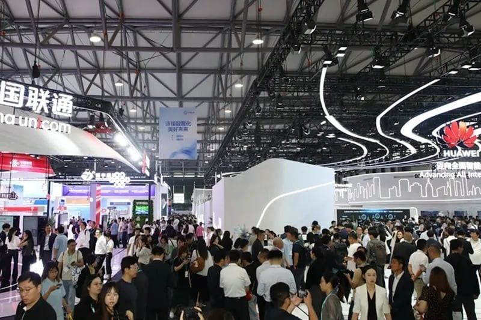

Conferences · Tech
MWC Shanghai 2027
- Dates
- –
- Venue
- Shanghai New International Expo Centre (SNIEC)
- Location
- Shanghai, China
- Format
- In-person
- Category
- Tech
- Industry
- Mobile / connectivity
- Organiser
- GSMA
- Expected attendance
- 37,300
- Official website
- https://www.mwcshanghai.com/
About
Dates are local to the host city (China Standard Time, UTC+8).
Topics: 5G, 6G, AI, telecoms, devices.
Official MWC Shanghai homepage: 'The proof from last year: 37300 attendees, 143 countries and territories' (MWC26 Shanghai, not a 2027 forecast).